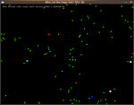

Artificial Intelligence Games 2009
Purpose: A purely recreational competition to battle each others' coding skills. Will promote and share clever Artificial Intelligence tactics for inspiration and use in other Gosu games.
Game:The attached mini-game involves five hunters chasing and overtaking 100 preys. Once the preys are eaten, the game resimulates. Very simple, allows a very basic knowledge of programming tactics while still leaving plenty of room for clever code.

Procedure: 1. Download and observe the simple mini-game as provided.
2. Redefine one or both of the classes "Prey" and "Hunter" (prey.rb, hunter.rb) in the given download and replace their respective files to make the game work with your new classes.
3. In your own classes, try to either extend or shorten the average lifetime of the preys. Make the Hunters "smarter" or else make the preys "smarter." If you submit a Hunter class, your scoring is based on how quickly the preys are consumed. Likewise, a submitted Prey class is scored on how long the preys can stay alive.
4. Submit your new class(es) on this forum thread the day of the deadline (TBA).
(edit) hey, you can just send me a message containing your class(es) too
Description of a Few Shortcomings to Hunter and Prey:The hunters are fast, but dull. They can chase down the preys easily enough, but sometimes they get caught in a merry-go-round with one prey in the center, which makes them spin in circles until another hunter knocks them away. They only ever accelerate toward the nearest prey at any given moment.
The preys can avoid capture through agility, but they run in an unorganized straight line away from the nearest hunter. Often, they cluster in the corners of the screen allowing the hunters to destroy many of them in one swoop. They only ever accelerate away from the nearest hunter at any given moment. (They do not detect or collide with one another due to optimization necessity).
Special Keys:The game runs itself through "ruby main.rb" but once the simulation begins, the display can be hidden or shown by pressing "D" and the game can be resimulated at no cost to the average time by pressing the space bar. Press the escape button to quit.
Specs and Restrictions: - There is no real reward to the contest. It should not take much time to submit a simple improved class, do it just for fun and to face off with other competitors' classes.
- Anyone can join, there is no official signup. Just submit however many classes you want on the deadline. Competitors are discouraged from submitting code early to avoid plagiarism (other players might steal your AI ideas and then submit their "own" class before the deadline).
(edit) sending me a private message containing your class solves any cheating problems. I didn't realize this at first. Do that instead xD
- You are permitted only to change the classes Prey and Hunter (prey.rb, hunter.rb)
- You cannot adjust the acceleration, radius, or other such set values in either class
- You cannot "stupefy" or else make "less smart" any class. There simply is no point: any and all classes you send in will be tested separate from each other.
- Average time is measured in seconds relative to game loops and is unaffected by the performance of your computer.
- Entities cannot "warp" in any way whatsoever (deliberate setting of x and y position)
- Let's be honest: The line between clever code and cheap loophole is obvious. Cheating at this competition is about as impressive as playing chess with a broom.
- Scoring will be based on how well your class stands up against the default counterpart and then against other competitors' classes. All submitted hunter classes will be pitted against the default Prey class and vice versa. At the end, some of the best classes of different competitors will be put against each other.
- The deadline has not yet been finalized, but is anticipated to be toward the end of December. Plenty of time.
(edit)
Deadline:Tuesday, December 22, 2009 (no specific time range/zone - all 24 hours of your day to submit)
All entries may be submitted before this deadline, however, this is discouraged to prevent others from receiving ample time to cheat and/or plagiarize other code. It is the expectation that this should not be a problem anyway.
The results will most likely be posted within a week after the deadline. After submitting all entries, a contestant can download other entries to see the results for themselves, but "even_smarter" classes submitted based on these results will not be eligible for the original competition.
Note:I'm not pretending to be Ludum Dare or anything. I just thought there would be no better way to promote cool code than hosting an AIG. Please post a reply if you wish to join, although it is not required. If it turns out nobody cares, then I'll just shut it down and get out of the way.
If this actually works out, however, there could be more AIG in the future with more elaborate scenarios. Just take a day or two and improve the Prey/Hunter classes. Use my own "smart_prey.rb" as an example - an addition of two or three lines of code increased the preys' lifetime by 30sec. The month-long deadline is just to allow anyone short on time to be able to submit.
Inform me of any errors, if you want fewer restrictions, or if you need help debugging your own classes.
class EntityLocation: entity.rb
--Members--
x, y read only
vx, vy read and write, but
read only for competition purposes
--Public Class Methods--
new(game)
game - the Gosu::Window instance being used.
--Public Instance Methods--
move
Call this function exactly one time in the update method of its subclasses Prey and Hunter. No exceptions. This really should have been called by GameWindow rather than the instances themselves, in fact.
find_closest(targets)
targets - an array of the counterpart entities, ex: hunters would call "find_closest(array_of_preys)"
Iterates through targets and returns the instance of the closest Prey/Hunter. Use at your pleasure.
accelerate(dir)
dir - the angle to accelerated toward.
Call this function once or not at all in your own code. Do not call it more than once or else the submission is illegitimate.
class HunterLocation: hunter.rb
--Relevant Instance Methods--
update(preys)
preys - an array given by GameWindow of all the preys on the screen. Use at you pleasure
Probably the only method intended to be adjusted in this competition for Hunter. Initialize may be adjusted to accommodate new instance variables, etc. You can find the closest prey in here via find_closest(preys). Note that the code where preys are eaten should not be adjusted to work on more than one prey per cycle and the distance < 5 should not be in any way changed for a larger eating radius.
class PreyLocation: prey.rb
--Members--
eaten read, boolean for whether or not the prey has been destroyed
--Relevant Instance Methods--
update(hunters)
hunters - array given by GameWindow containing all the hunter instances. Use at your pleasure.
The only method that really needs tweaking in this competition. You may consider using find_closest(hunters) and accelerate away. Use "move" exactly one time and "accelerate" at most once or not at all. Always have !@eaten as the last line of this method to tell GameWindow that the prey still exists.


{kind=link}